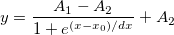
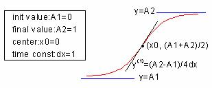

内容 |

Boltzmann関数 - シグモイド曲線を生成します。

数：4
パラメータの名前:A1, A2, x0, dx
意味:A1 = 初期値, A2 = 最終値, x0 = 中心, dx = 時間定数
下側境界:なし
上側境界:なし
範囲：span=abs(A1-A2)
最大半量の有効濃度 EC50=exp(x0)
dx != 0
nlf_boltzman(x,A1,A2,x0,dx)
FITFUNC\BOLTZMAN.FDF
Origin Basic Functions, Growth/Sigmoidal